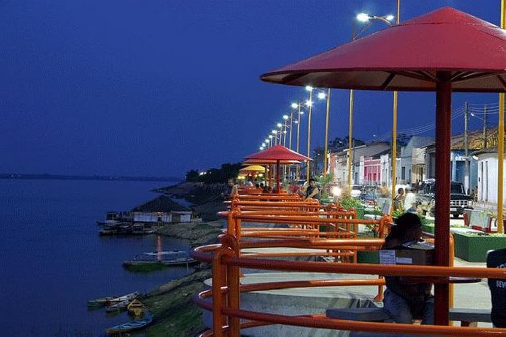

Amanda de Souza Silva
Sobre Mim
Olá! Meu nome é Amanda, sou casada e mãe de um menino de dois anos. Atualmente, sou estudante da BYU-Pathway Worldwide, onde estudo Desenvolvimento de Software. Tenho experiência nas áreas de administração, vendas e gestão, e estou sempre buscando aprender coisas novas e desenvolver minhas habilidades. Sou uma pessoa dedicada, curiosa e gosto de desafios. Meu objetivo é crescer profissionalmente, conquistar novas oportunidades e construir um futuro melhor para minha família.
Marabá, Pará, Brasil

Marabá, localizada no sudeste do Pará, é uma cidade de grande importância para a região Norte do Brasil. Conhecida pelo encontro dos rios Tocantins e Itacaiúnas, encanta por suas belezas naturais, sua diversidade cultural e seu povo acolhedor. A cidade possui uma economia diversificada, com destaque para o comércio, a indústria e a mineração. Além disso, sua culinária.